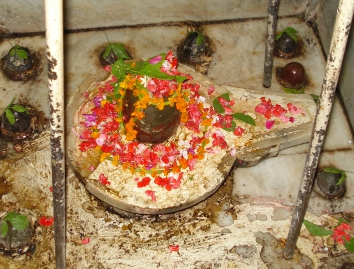
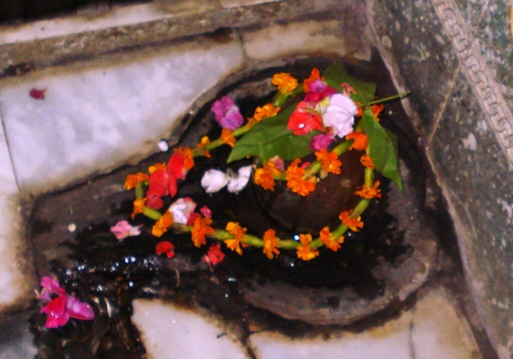

<?xml version="1.0" encoding="UTF-8"?><rss version="2.0"
	xmlns:content="http://purl.org/rss/1.0/modules/content/"
	xmlns:wfw="http://wellformedweb.org/CommentAPI/"
	xmlns:dc="http://purl.org/dc/elements/1.1/"
	xmlns:atom="http://www.w3.org/2005/Atom"
	xmlns:sy="http://purl.org/rss/1.0/modules/syndication/"
	xmlns:slash="http://purl.org/rss/1.0/modules/slash/"
	>

<channel>
	<title>Pulaheshwar &#8211; Varanasi Temples</title>
	<atom:link href="index.html" rel="self" type="application/rss+xml" />
	<link>../../../../../index.html</link>
	<description>Temples of Varanasi as referred to in Kashi Khand</description>
	<lastBuildDate>Thu, 19 Jun 2025 05:16:46 +0000</lastBuildDate>
	<language>en-US</language>
	<sy:updatePeriod>hourly</sy:updatePeriod>
	<sy:updateFrequency>1</sy:updateFrequency>
	<generator>https://wordpress.org/?v=4.6.29</generator>
	<item>
		<title>PULAHESHWAR</title>
		<link>../../../../../shiva-temples/pulaheshwar/index.html</link>
		<pubDate>Mon, 10 May 2010 02:45:02 +0000</pubDate>
		<dc:creator><![CDATA[admin]]></dc:creator>
				<category><![CDATA[Other Shiva Temples (L-R)]]></category>
		<category><![CDATA[Pulaheshwar]]></category>
		<category><![CDATA[Shiva Temples]]></category>

		<guid isPermaLink="false">../../../../../p=388.html</guid>
		<description><![CDATA[Kashi Khand, Chapter 18 mentions that various Lings have been installed in the holy city of Kashi by great Rishis (Sages).  It is worth mentioning here that on account of intense prayers to the Lords, the Sages have attained divine powers. (PULAHESHWAR) Towards the north of Swarg Dwar is the Ling of Pulaheshwar.  This Ling [&#8230;]]]></description>
				<content:encoded><![CDATA[<p>Kashi Khand, Chapter 18 mentions that various Lings have been installed in the holy city of Kashi by great Rishis (Sages).  It is worth mentioning here that on account of intense prayers to the Lords, the Sages have attained divine powers.</p>
<p></p>
<p style="text-align: center;"><strong>(PULAHESHWAR)</strong></p>
<p>Towards the north of Swarg Dwar is the Ling of Pulaheshwar.  This Ling has been installed by the great Sage Pulaha. Devotees who worship this Ling will reach the Prajapati Lok after death (Prajapati Lok is considered to be that part of heaven where intellectual people reside).</p>
<p>&nbsp;</p>
<p><strong>&#8212;&#8212;&#8212;&#8212;&#8212;&#8212;&#8212;&#8212;&#8212;&#8212;&#8212;&#8212;&#8212;&#8212;&#8212;&#8212;&#8212;&#8212;&#8212;&#8212;&#8212;&#8212;&#8212;&#8212;&#8212;&#8212;&#8212;&#8212;&#8212;&#8212;&#8212;&#8212;&#8212;&#8212;-</strong></p>
<p><strong> </strong></p>
<p><strong>Kashi Khand, Chapter 18, Shlok 19</strong></p>
<p><strong> </strong></p>
<p><strong>पुलहेश पुलस्त्येषौ स्वर्गद्वारस्य पश्चिमे </strong></p>
<p><strong>तौ दृष्ट्वा मनुजो प्राजापत्ये महीयते</strong></p>
<p>&nbsp;</p>
<p><strong>Both Pulheshwar and Pulastyeshwar lingas are situated to the west of Swargadwar. Devotees who worship these lings, reside in Prajapati Loka with all honours. </strong></p>
<p><strong> </strong></p>
<p><strong>&#8212;&#8212;&#8212;&#8212;&#8212;&#8212;&#8212;&#8212;&#8212;&#8212;&#8212;&#8212;&#8212;&#8212;&#8212;&#8212;&#8212;&#8212;&#8212;&#8212;&#8212;&#8212;&#8212;&#8212;&#8212;&#8212;&#8212;&#8212;&#8212;&#8212;&#8212;&#8212;&#8212;&#8212;&#8212;</strong></p>
<p>&nbsp;</p>
<p><strong><span style="text-decoration: underline;">LOCATION OF PULAHESHWAR</span></strong></p>
<p><strong><span style="text-decoration: underline;"> </span></strong></p>
<p>Pulaheshwar is located at Ck.33/43, Thakurdas Surekha Bhavan in Brahmanal Chouraha. This is on the way to Manikarnika Ghat.  The premises is having a platform made of marble and this is the easy idetification.  People can travel upto Chowk by rickshaw and walk upto this place by foot. Brahmanal Chouraha/Swargdwar is an important landmark.</p>
<p>There is another Ling installed by a great Sage Pulasthia and known as Pulatheeshwar in the same premises.</p>
<p>&nbsp;</p>
<p></p>
<p style="text-align: center;"><strong>(PULASTHEESHWAR)</strong></p>
<p>&nbsp;</p>
<p><strong>Please watch our YouTube Video about Pulaheshwar and Pulateeshwar at following Link</strong></p>
<p>&nbsp;</p>
<p><a href="https://www.youtube.com/watch?v=_QM9964hhtM&amp;t=27s">https://www.youtube.com/watch?v=_QM9964hhtM&amp;t=27s</a></p>
<p>&nbsp;</p>
<p><strong><span style="text-decoration: underline;">TYPES OF POOJA</span></strong></p>
<p>The Ling is installed inside the premises of a private person. However, devotees can have darshan throughout.  People can perform pooja on their own.</p>
]]></content:encoded>
			</item>
	</channel>
</rss>
